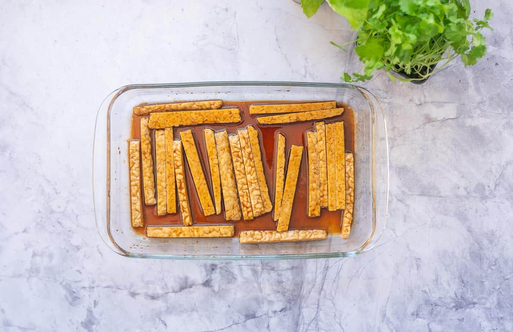
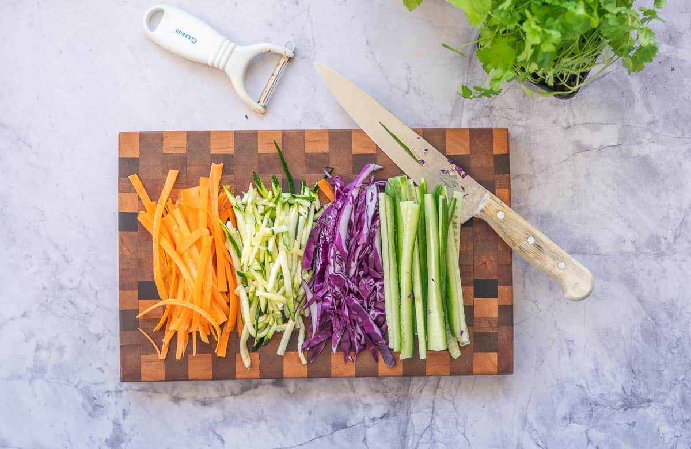
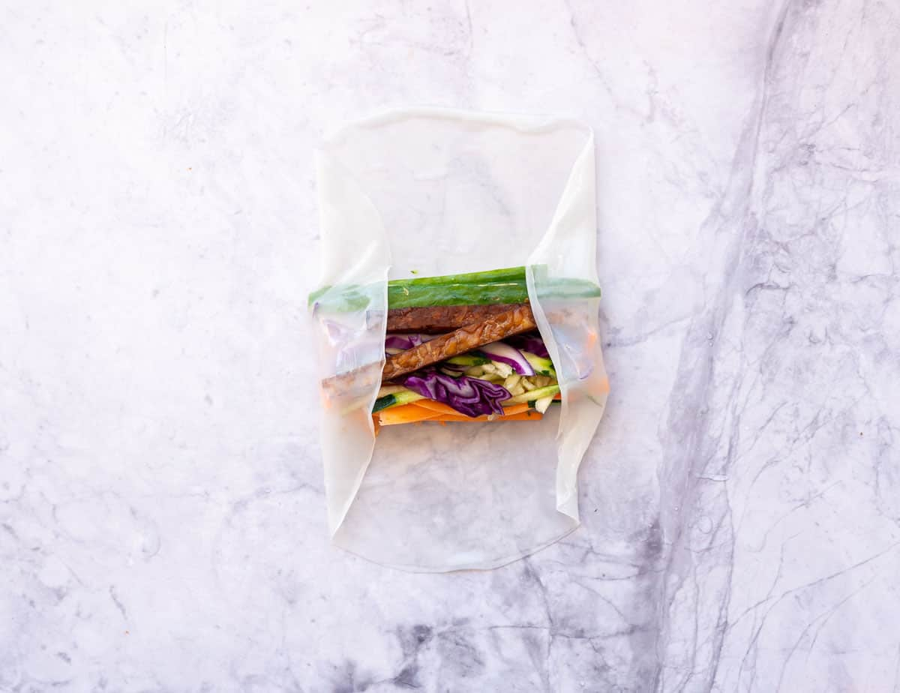

Rice Paper Rolls
Prep, Cook, Total, Servings, and Yield
Prep: 10 mins
Cook: 10 mins
Total: 20 mins
Servings: 12 rolls
Yield: 12 Rice paper rolls
Ingredients
- Tofu/Tempeh
- 250 g firm tofu or tempeh
- 3 Tablespoon soy sauce
- 1 Tablespoon sesame oil
- 1 teaspoon brown sugar
- Rice Paper Rolls
- 2 zucchini or zucchini noodles 300 grams
- 1 carrot
- 1 cucumber
- ¼ head red cabbage
- 1 handful fresh herbs
- vermicelli (optional)
- 12 rice paper (12 if going single layer or 24 if doubling up)
Instructions
- In a large flat-bottomed dish, whisk together the soy sauce, brown sugar, and sesame oil.
- Slice your firm tofu into slices. Lie the tofu slices in the marinade.
- Flip the tofu over so that both sides are coated, and leave to rest.
- Preheat your oven to 200°C (400°F).
- Bake in the hot oven for 30 minutes, turning once during cooking.
- Remove from the oven and allow to cool.
- Prepare the vegetables by slicing them into long thin batons or using a food processor.
- Fill a large bowl with room temperature water. Soak the rice paper until softened.
- Lay the softened rice paper smooth side down on your work surface.
- Lay the vegetables, then tofu, and then herbs on the rice paper.
- Fold the sides of the rice paper towards the center, then roll tightly.
- Cover the rolls with a damp cloth to prevent drying out.


